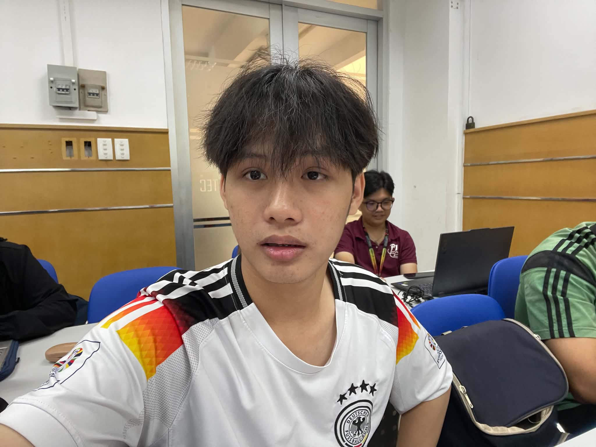
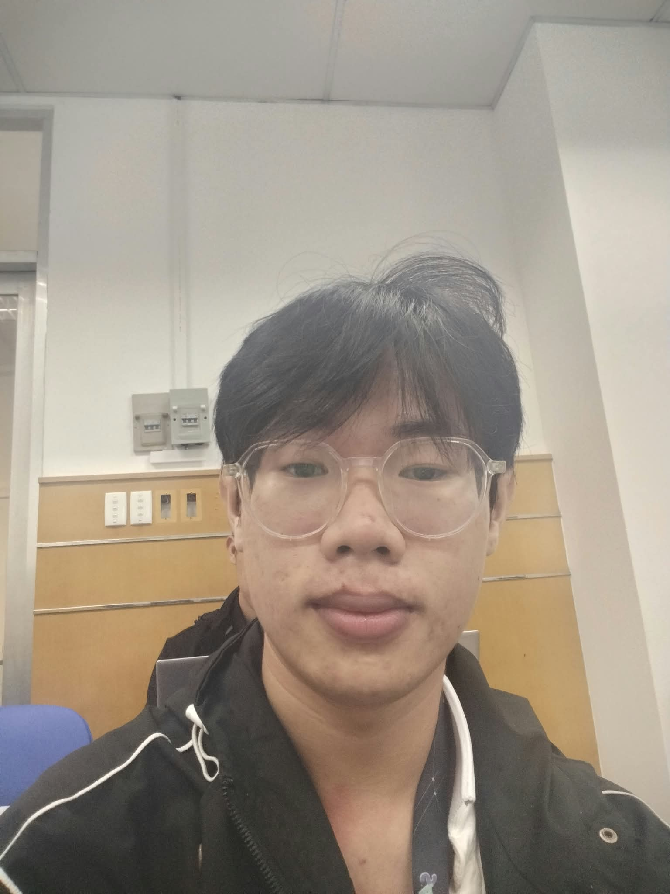
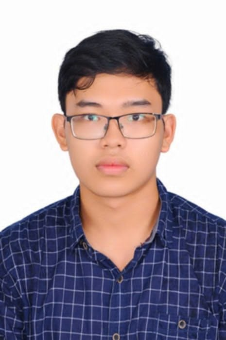

01 / VPBACKEND & HỆ THỐNGNguyễn Văn Phú
Software Engineering Student
Quan tâm đến backend, microservices, hệ thống phân tán và công nghệ tài chính. Học bằng cách xây dựng và kiểm thử hệ thống thực tế.
Chúng mình là Văn Phú, Vũ Duy và Tiến Đạt. Kết nối tư duy hệ thống, thiết kế trải nghiệm và lập trình để biến ý tưởng thành những sản phẩm có ích.
Mỗi thành viên mang đến một cách nhìn riêng. Khám phá chuyên môn, dự án và định hướng của từng người.

01 / VPBACKEND & HỆ THỐNGSoftware Engineering Student
Quan tâm đến backend, microservices, hệ thống phân tán và công nghệ tài chính. Học bằng cách xây dựng và kiểm thử hệ thống thực tế.

02 / VDTHIẾT KẾ & TRẢI NGHIỆMUI/UX & Frontend
Định hướng thiết kế trải nghiệm học tập trực quan, xây dựng hệ thống giao diện nhất quán và dễ sử dụng cho EduPulse AI.

03 / TĐFRONTEND & ỨNG DỤNGĐịnh hướng Frontend / Junior Developer
Sinh viên Công nghệ thông tin tại HCMUS, xây dựng ứng dụng với React và Node.js; yêu thích thuật toán và trải nghiệm người dùng.
Những dự án giúp từng thành viên phát triển tư duy giải quyết vấn đề và kỹ năng xây dựng phần mềm.
Nền tảng nghề nghiệp tích hợp hồ sơ, dữ liệu việc làm, tạo CV, đánh giá ATS và tạo thư ứng tuyển.
API Gateway định tuyến đến các dịch vụ. RabbitMQ xử lý CV và ATS bất đồng bộ; PostgreSQL lưu dữ liệu. Docker Compose thiết lập môi trường 10 container, kết hợp kiểm thử unit, integration và end-to-end.
GitHub của Phú ↗Ứng dụng desktop trực quan hóa các thuật toán tìm kiếm AI cổ điển, mô phỏng quá trình giải mê cung theo thời gian thực.
Xem mã nguồnỨng dụng web responsive hiển thị dự báo và cập nhật thời tiết cho Thành phố Hồ Chí Minh cùng các khu vực khác tại Việt Nam.
Xem mã nguồnMột hệ thống trợ lý học tập hướng đến việc xác định lỗ hổng kiến thức, gợi ý bài học phù hợp và hỗ trợ giải thích bài tập dựa trên tài liệu học tập.
Đề án kết hợp kiến trúc phần mềm, thiết kế trải nghiệm và nghiên cứu AI để xây dựng một hành trình học tập có tính cá nhân hóa.
Phân tích kết quả câu hỏi để xác định nội dung người học cần củng cố và đề xuất bài tập tương ứng.
Nghiên cứu RAG để truy xuất giáo trình liên quan và hỗ trợ giải thích từng bước, hướng đến câu trả lời có căn cứ.
Thiết kế báo cáo trực quan giúp người học và giảng viên theo dõi sự tiến bộ theo thời gian.
Kế hoạch triển khai EduPulse AI, từ xác định bài toán đến đánh giá và trình bày sản phẩm.
Khảo sát nhu cầu, đặc tả yêu cầu, xây dựng kiến trúc dữ liệu và prototype giao diện.
Thử nghiệm RAG, cơ sở dữ liệu vector, API và luồng gợi ý bài tập.
Tích hợp dashboard học tập, theo dõi tiến bộ và thu thập phản hồi người dùng.
Đánh giá kết quả, tối ưu hệ thống, hoàn thiện tài liệu và chuẩn bị thuyết trình.
Lộ trình dự kiến của đề án; các mốc không thể hiện trạng thái hoàn thành thực tế.
Nhóm luôn sẵn sàng lắng nghe góp ý về sản phẩm, trao đổi chuyên môn và tìm kiếm cơ hội học hỏi.
Software Engineering Student · Backend & hệ thống
Sinh viên Kỹ thuật phần mềm tại University of Science, quan tâm đến backend, microservices, hệ thống phân tán và công nghệ tài chính.
University of Science · Software Engineering
GPA: 8.31/10 · Hoàn thành 87/138 tín chỉ.
Tiếng Việt: bản ngữ. Tiếng Anh: trung cấp. Thế mạnh: tự học, tư duy phân tích, kiên trì, làm việc nhóm và giao tiếp.
Phụ trách kiến trúc backend, dữ liệu và phối hợp tích hợp các thành phần của hệ thống.
UI/UX & Frontend
Trong định hướng EduPulse AI, Duy tập trung vào thiết kế trải nghiệm người học và phát triển giao diện nhất quán, dễ tiếp cận.
Định hướng Frontend Engineer Intern / Junior Developer
Sinh viên Công nghệ thông tin tại VNU-HCM, HCMUS. Xây dựng ứng dụng web với React và Node.js, vận dụng kiến thức thuật toán và kiến trúc máy tính trong phát triển phần mềm.
VNU-HCM | HCMUS · 2024–2028
Công nghệ thông tin · Chuyên ngành Kỹ thuật phần mềm.
Green Volunteer Club · 2024–2025
Tham gia thu gom, phân loại rác, hoạt động gây quỹ và hỗ trợ nhu yếu phẩm cho các gia đình khó khăn.
Sở thích: đọc sách, du lịch và tập thể dục.
Nghiên cứu AI và luồng RAG theo phân công đề án. Đây là hướng công việc của nhóm, tách biệt với kinh nghiệm frontend/full-stack được trình bày trong CV cá nhân.